Chapter 8 Deeper into ggplot
In the last chapter you were introduced to ggplot2, the graphic function that is part of the tidyverse. With this chapter we’ll walk through more ways to use ggplot. This will also serve as a reference for you. A huge hat tip to Jo Lukito. One of her lessons inspired most of this.
8.1 References
ggplot2 has a LOT to it and we’ll cover only the basics. Here are some references you might use:
- ggplot cheatsheet
- R for Data Science
- R Graphics Cookbook
- The R Graph Gallery another place to see examples.
- ggplot2: Elegant graphics for Data Analysis
8.2 Learning goals for this chapter
Some things we’ll touch on concerning ggplot:
- Prepare and build a line chart
- Using themes to change the look of our charts
- Adding/changing aesthetics in layers
- Facets (multiple charts from same data)
- Saving files
- Interactivity with Plotly
8.3 Set up your notebook
We’ll use the same yourname-ggplot project we used in the last chapter, but start a new RNotebook.
- Open your plot project.
- Start a new RNotebook. Add the goals listed above.
- Load the tidyverse package.
8.3.1 Let’s get the data
I hope to demonstrate in class the creation of this first plot. Otherwise you should be able to follow along in the screencast.
Again, we won’t download the data … we’ll just import it and save it to a tibble. We are using data from a weekly project called #tidytuesday that the community uses to practice R. Perhaps in the near future we’ll have our own #tidytuesday sessions!
- Start a new section to indication you are importing the data
- Note in text it is from #tidytuesday
- Add the code chunk below, which will download a saved copy of the data.
kids_data <- read_rds("https://github.com/utdata/rwdir/blob/main/data-raw/kids-data.rds?raw=true")
# peek at the table
kids_data## # A tibble: 23,460 × 6
## state variable year raw inf_adj inf_adj_perchild
## <chr> <chr> <dbl> <dbl> <dbl> <dbl>
## 1 Alabama PK12ed 1997 3271969 4665308. 3.93
## 2 Alaska PK12ed 1997 1042311 1486170 7.55
## 3 Arizona PK12ed 1997 3388165 4830986. 3.71
## 4 Arkansas PK12ed 1997 1960613 2795523 3.89
## 5 California PK12ed 1997 28708364 40933568 4.28
## 6 Colorado PK12ed 1997 3332994 4752320. 4.38
## 7 Connecticut PK12ed 1997 4014870 5724568. 6.70
## 8 Delaware PK12ed 1997 776825 1107629. 5.63
## 9 District of Columbia PK12ed 1997 544051 775730. 6.11
## 10 Florida PK12ed 1997 11498394 16394885 4.45
## # … with 23,450 more rows# glimpse it
kids_data %>% glimpse()## Rows: 23,460
## Columns: 6
## $ state <chr> "Alabama", "Alaska", "Arizona", "Arkansas", "Californ…
## $ variable <chr> "PK12ed", "PK12ed", "PK12ed", "PK12ed", "PK12ed", "PK…
## $ year <dbl> 1997, 1997, 1997, 1997, 1997, 1997, 1997, 1997, 1997,…
## $ raw <dbl> 3271969, 1042311, 3388165, 1960613, 28708364, 3332994…
## $ inf_adj <dbl> 4665308.5, 1486170.0, 4830985.5, 2795523.0, 40933568.…
## $ inf_adj_perchild <dbl> 3.929449, 7.548493, 3.706679, 3.891275, 4.282325, 4.3…If you want to learn more about this dataset you can find information here. In short: “This dataset provides a comprehensive accounting of public spending on children from 1997 through 2016.” Included is spending for higher education (the highered values in the column variable.)
We’ll filter this data to get to our data of interest: How much does Texas (and some neighboring states) spend on higher education.
8.4 Make a line chart of the Texas data
Our first goal here is to plot the “inflation adjusted spending per child” for higher education in Texas.
8.4.1 Prepare the data
We need to filter our data to include just the highered values for Texas. We’re going to save that filtered data into a new tibble.
- Add a new section indicating we are building a chart to show higher education spending in Texas.
- Note that we are preparing the data.
- Add the chunk below and run it.
tx_hied <- kids_data %>%
filter(
variable == "highered",
state == "Texas"
)
# peek at the data
tx_hied## # A tibble: 20 × 6
## state variable year raw inf_adj inf_adj_perchild
## <chr> <chr> <dbl> <dbl> <dbl> <dbl>
## 1 Texas highered 1997 3940232 5618146. 0.944
## 2 Texas highered 1998 4185619 5895340. 0.970
## 3 Texas highered 1999 4578617 6368075 1.03
## 4 Texas highered 2000 4810358 6554888. 1.05
## 5 Texas highered 2001 5684406. 7564852 1.20
## 6 Texas highered 2002 6558453 8589044 1.34
## 7 Texas highered 2003 6584970. 8462055 1.31
## 8 Texas highered 2004 6611486 8290757 1.27
## 9 Texas highered 2005 7180804 8730524 1.32
## 10 Texas highered 2006 7744386 9119121 1.34
## 11 Texas highered 2007 7540724 8644579 1.25
## 12 Texas highered 2008 8914255 10011380 1.42
## 13 Texas highered 2009 10039289 11145217 1.55
## 14 Texas highered 2010 13097474 14413453 1.99
## 15 Texas highered 2011 13366868 14416946 1.97
## 16 Texas highered 2012 13999386 14828316 2.01
## 17 Texas highered 2013 14520493 15124855 2.04
## 18 Texas highered 2014 16101982 16470816 2.19
## 19 Texas highered 2015 16591235 16773450 2.21
## 20 Texas highered 2016 15507047 15507047 2.028.4.2 Plot the chart
I want you to create the plot here one step at a time so you can review how the layers are added.
- Add and run the ggplot() line first (but without the
+) - Then add the
+and thegeom_point()and run it. - Then add the
+andgeom_line()and run it. - When you add the
labs()add all the lines at once and run it.
ggplot(tx_hied, aes(x = year, y = inf_adj_perchild)) + # we create our graph
geom_point() + # adding the points
geom_line() + # adding the lines between points
labs(
title = "School spending slips",
subtitle = "Texas spent less per child on higher education in 2016.",
x = "Year", y = "$ per child (Adjusted for Inflation)",
caption = "Source: tidykids"
)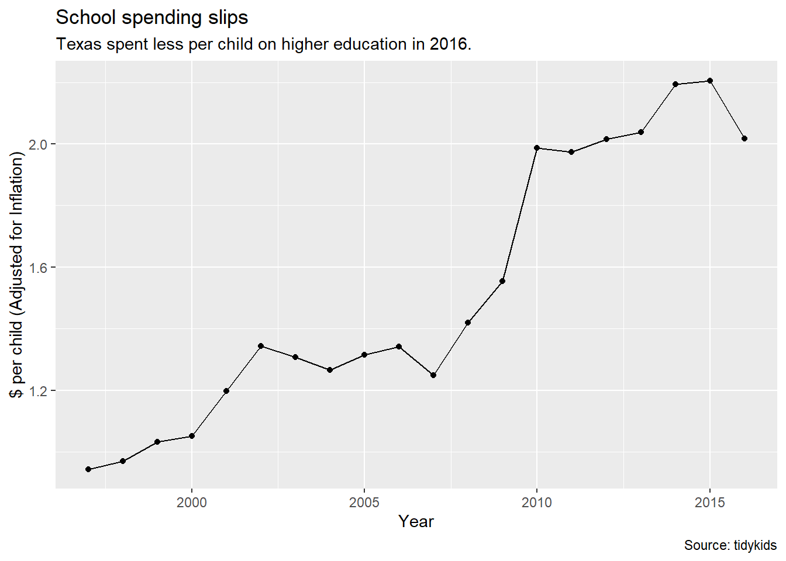
# labs above add text layer on top of graphWe have a pretty decent chart showing year on our x axis and inf_adj_perchild (or inflation-adjusted spending per child) on our y axis.
8.4.3 Saving plots as an object
Sometimes it is helpful to push the results of a plot into an R object to “save” those configurations. You can continue to add layers after, but don’t have to rebuild the basic chart each time. We’ll do that here so we can explore themes next.
- Edit your Texas plot chunk you made earlier to save it into an R object, and then call
tx_plotafter it so you can see it.
# the line below pushes the graph results into tx_plot
tx_plot <- ggplot(tx_hied, aes(x = year, y = inf_adj_perchild)) +
geom_point() +
geom_line() +
labs(
title = "School spending slips",
subtitle = "Texas spent less per child on higher education in 2016.",
x = "Year", y = "$ per child (Adjusted for Inflation)",
caption = "Source: tidykids"
)
# Since we saved the plot into an R object above, we have to call it again to see it.
# We save graphs like this so we can reuse them.
tx_plot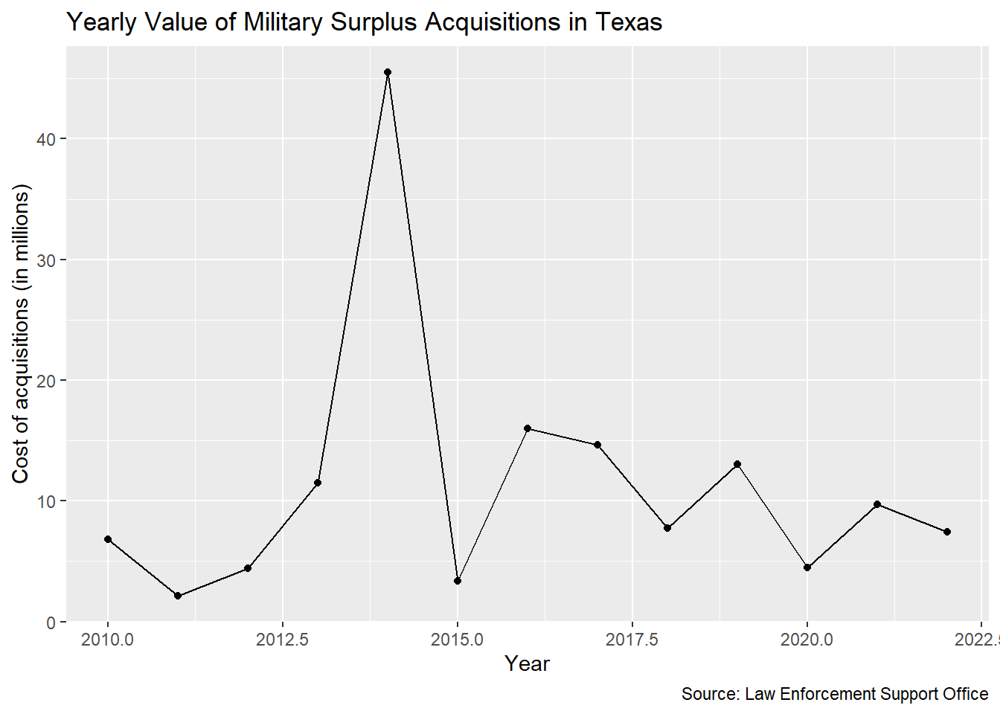
We can continue to build upon the tx_plot object like we do below with themes, but those changes won’t be “saved” into the R environment unless you assign it to an R object.
8.5 Themes
The look of the graph is controlled by the theme. There are a number of preset themes you can use. Let’s look at a couple.
- Create a new section saying we’ll explore themes
- Add the chunk below and run it.
tx_plot +
theme_minimal()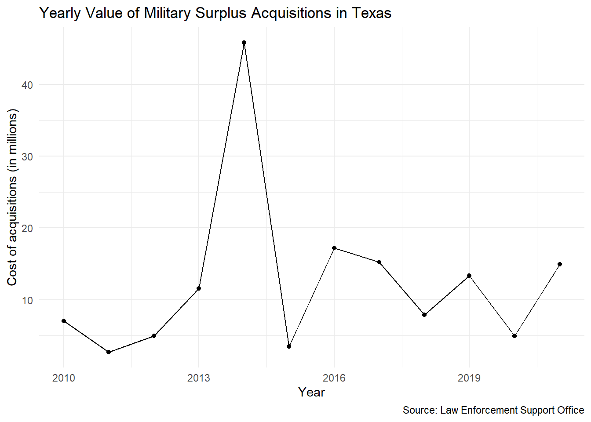
This takes our existing tx_plot and then applies the theme_minimal() look to it.
There are a number of themes built into ggplot, most are pretty simplistic.
- Edit your existing chunk to try different themes. Some you might try are
theme_classic(),theme_dark()andtheme_void().
8.5.1 More with ggthemes
There are a number of other packages that build upon ggplot2, including ggthemes.
- In your R console, install the ggthemes package:
install.packages("ggthemes") - Add the
library(ggthemes)at the top of your current chunk. - Update the theme line to view some of the others options noted below.
library(ggthemes)
tx_plot +
theme_economist()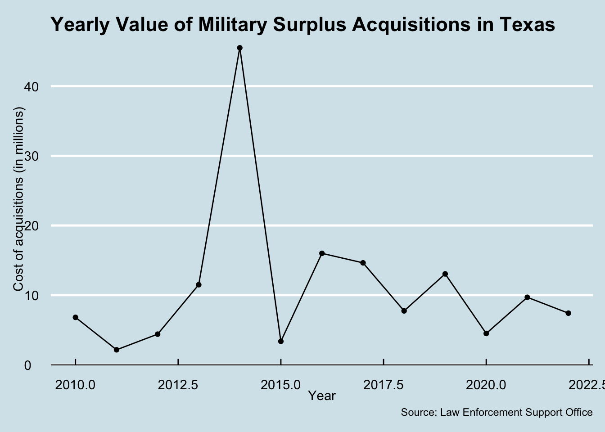
tx_plot +
theme_fivethirtyeight()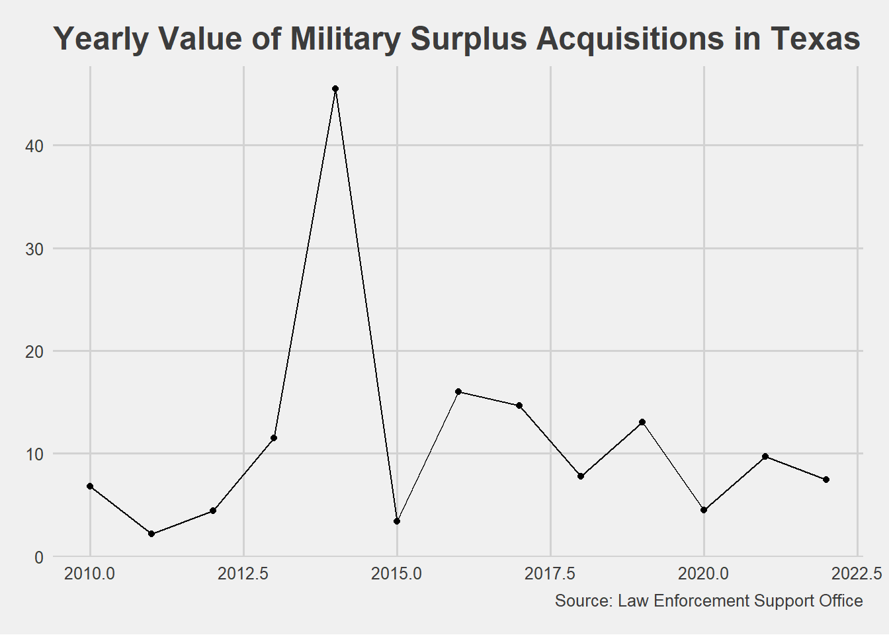
tx_plot +
theme_stata()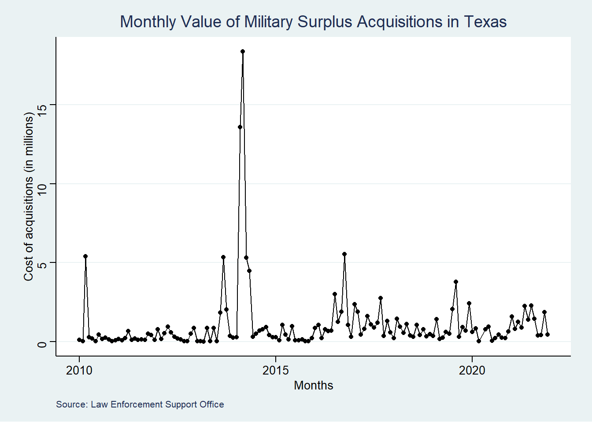
8.5.2 There is more to themes
There is also a theme() function that allows you individually adjust about every visual element on your plot.
We do a wee bit of that later.
8.6 Adding more information
OK, our Texas higher education spending is fine … but how does that compare to neighboring states? Let’s work through building a new chart that shows all those steps.
8.6.1 Prepare the data
We need to go back to our original kids_data to get the additional states.
- Start a new section that notes we are building a chart for five states.
- Note that we’ll first prepare the data.
five_hied <- kids_data %>%
filter(
variable == "highered",
state %in% c("Texas", "Oklahoma", "Arkansas", "New Mexico", "Louisiana")
)
five_hied## # A tibble: 100 × 6
## state variable year raw inf_adj inf_adj_perchild
## <chr> <chr> <dbl> <dbl> <dbl> <dbl>
## 1 Arkansas highered 1997 457171 651853. 0.907
## 2 Louisiana highered 1997 672364 958684. 0.731
## 3 New Mexico highered 1997 639409 911696. 1.68
## 4 Oklahoma highered 1997 624053 889800. 0.942
## 5 Texas highered 1997 3940232 5618146. 0.944
## 6 Arkansas highered 1998 477757 672909. 0.930
## 7 Louisiana highered 1998 747739 1053172. 0.805
## 8 New Mexico highered 1998 667738 940492. 1.74
## 9 Oklahoma highered 1998 690234 972177. 1.02
## 10 Texas highered 1998 4185619 5895340. 0.970
## # … with 90 more rowsNote we used our %in% filter to get any state listed in c().
8.6.2 Plot multiple line chart
Let’s add a different line for each state. To do this you would use the color aesthetic aes() in the geom_line() geom. Recall that geoms can have their own aes() variable information. This is especially useful for working with a third variable (like when making a stacked bar chart or line plot with multiple lines). Notice that the color aesthetic (meaning that it is in aes) takes a variable, not a color. You can learn how to change these colors here.
- Add a note that we’ll now build the chart.
- Add the code chunk below and run it. Look through the comments so you understand it.
ggplot(five_hied, aes(x = year, y = inf_adj_perchild)) +
geom_point() +
geom_line(aes(color = state)) + # The aes selects a color for each state
labs(
title = "Spending on Higher Education in Texas, Bordering States",
x = "Year",
y = "$ per child (Adjusted for Inflation)",
caption = "Source: tidykids"
)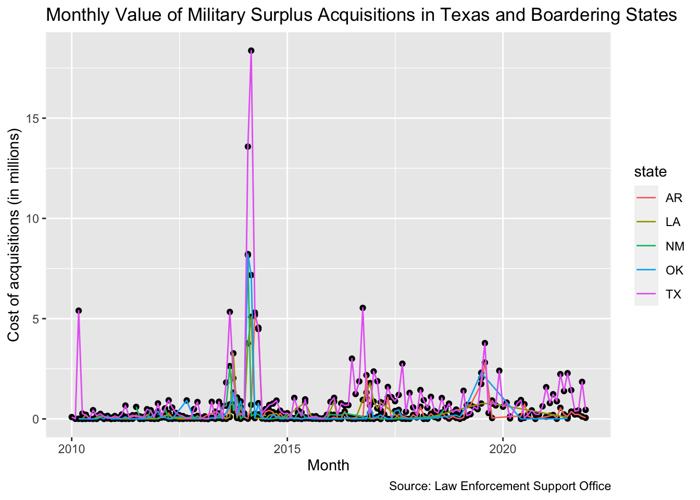
Notice that R changes the color of the line, but not the point? This is because we only included the aesthetic in the geom_line() geom and not the geom_point() geom.
- Edit your
geom_point()to addaes(color = state).
ggplot(five_hied, aes(x = year, y = inf_adj_perchild)) +
geom_point(aes(color = state)) + # add the aes here
geom_line(aes(color = state)) +
labs(title = "Spending on Higher Education in Texas, Bordering States",
x = "Year", y = "$ per child (Adjusted for Inflation)",
caption = "Source: tidykids")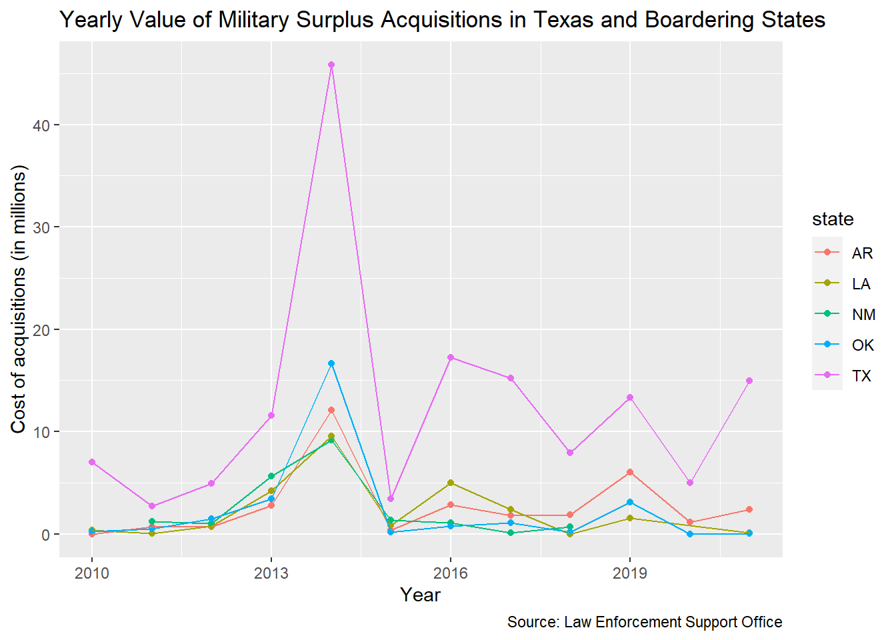
8.7 On your own: Line chart
I want you to make a line chart of preschool-to-high-school spending (the “PK12ed” value in the variable column) showing the inflation adjusted per-child spending (the inf_adj_perchild column) for the five states that border the Gulf of Mexico. This is very similar to the chart you just made, but with different values.
Some things to do/consider:
- Do this in a new section and explain it.
- You’ll need to prepare the data just like we did above to get the right data points and the right states.
- I really suggest you build both chunks (the data prep and the chart) one line at a time so you can see what each step adds.
- Save the resulting plot into a new R object because we’ll use it later.
8.8 Tour of some other adjustments
You don’t have to add these examples below to your own notebook, but here are some examples of other things you can control.
8.8.1 Line width
ggplot(five_hied, aes(x = year, y = inf_adj_perchild)) +
geom_point(aes(color = state)) +
geom_line(aes(color = state), size = 1.5) + # added size here
labs(title = "Spending on Higher Education in Texas, Bordering States",
x = "Year", y = "$ per child (Adjusted for Inflation)",
caption = "Source: tidykids")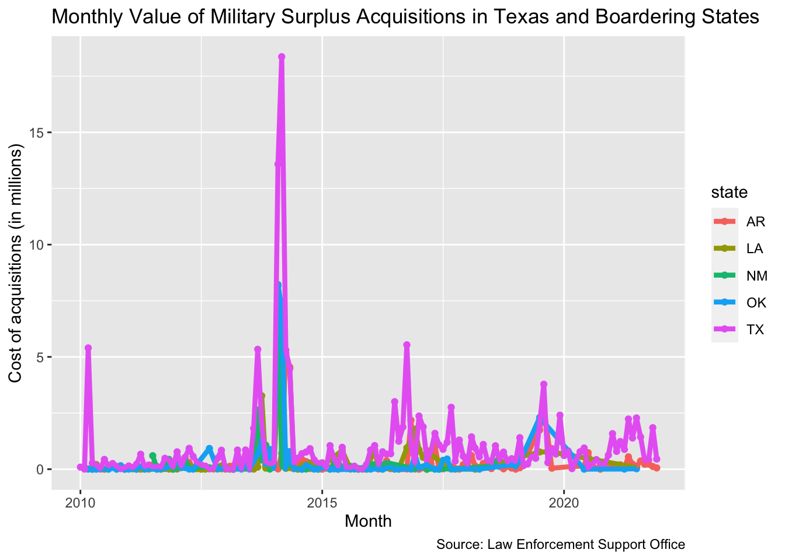
8.8.2 Line type
This example removes the points and adds a linetype = state to the ggplot aesthetic. This gives each state a different type of line. We also set the color in the geom_line()
ggplot(five_hied, aes(x = year, y = inf_adj_perchild)) +
geom_line(aes(color = state, linetype = state), size = .75) +
labs(title = "Spending on Higher Education in Texas, Bordering States",
x = "Year", y = "$ per child (Adjusted for Inflation)",
caption = "Source: tidykids")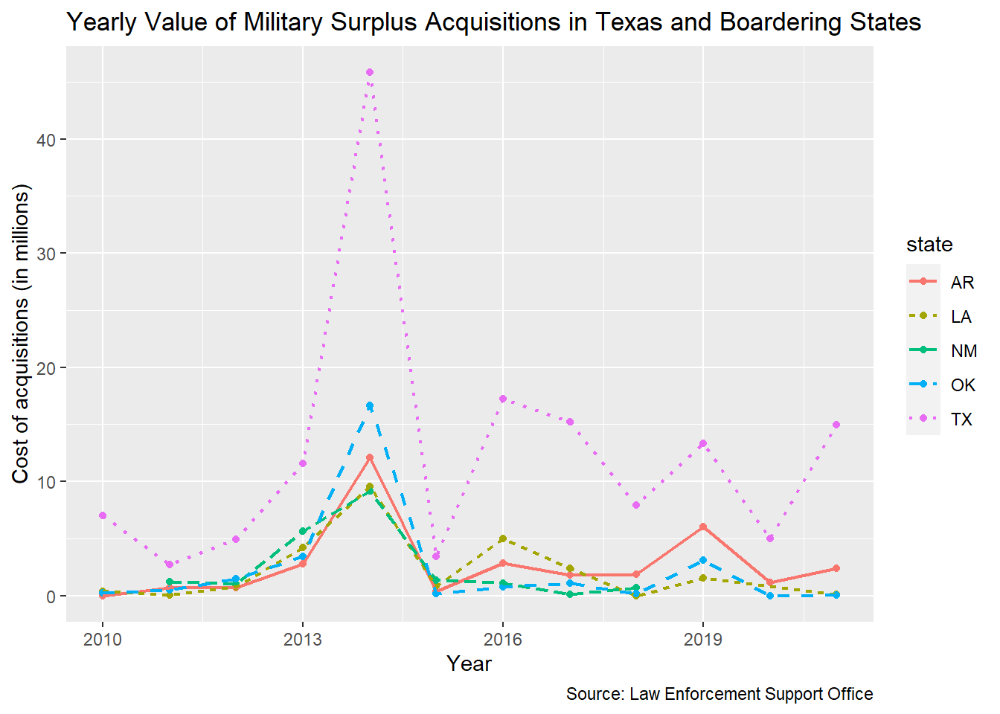
8.8.3 Adjust axis
ggplot() typically makes assumptions about scale. Sometimes, you may want to change it though (e.g., make them a little larger). There are a couple different ways to do this. The most straightforward may be xlim() and ylim().
ggplot(five_hied, aes(x = year, y = inf_adj_perchild, linetype = state)) +
geom_line(aes(color = state), size = .75) +
xlim(1995, 2020) + # sets minimum and maximum values on axis
labs(title = "Spending on Higher Education in Texas, Bordering States",
x = "Year", y = "$ per child (Adjusted for Inflation)",
caption = "Source: tidykids")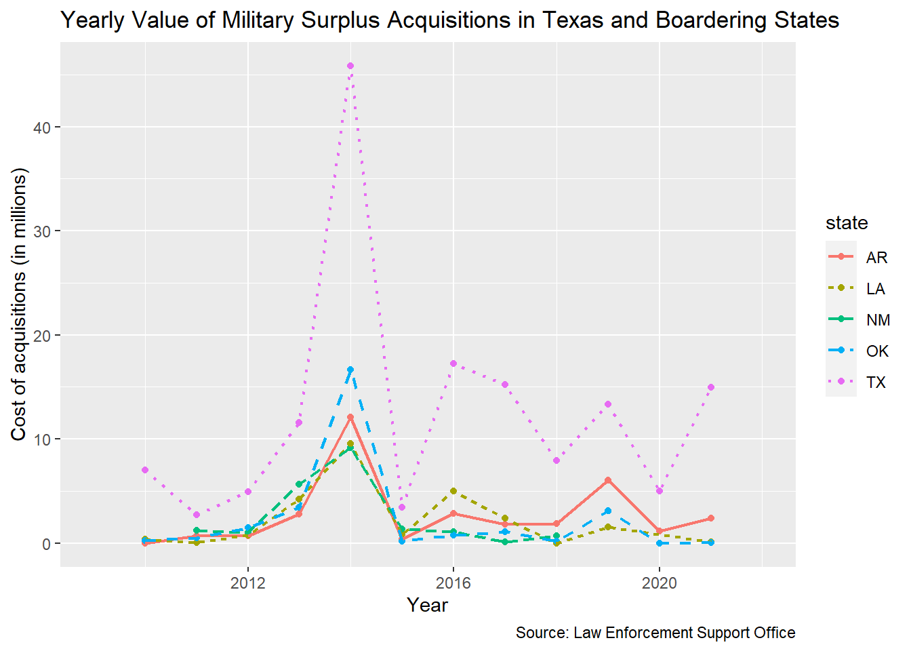
The function xlim() and ylim() are shortcuts for scale_x_continuous() and scale_y_continuous() which do more things.
8.9 Facets
Facets are a way to make multiple graphs based on a variable in the data. There are two types, the facet_wrap() and the facet_grid(). There is a good explanation of these in R for Data Science.
We’ll start by creating a base graph and then apply the facet.
- Start a new section about facets
- Add the code below to create your chart and view it.
five_plot <- ggplot(five_hied, aes(x = year,
y = inf_adj_perchild)) +
geom_line(aes(color = state)) +
geom_point(aes(color = state)) +
labs(title = "Spending on Higher Education in Texas, Bordering States",
x = "Year", y = "$ per child (Adjusted for Inflation)",
caption = "Source: tidykids")
five_plot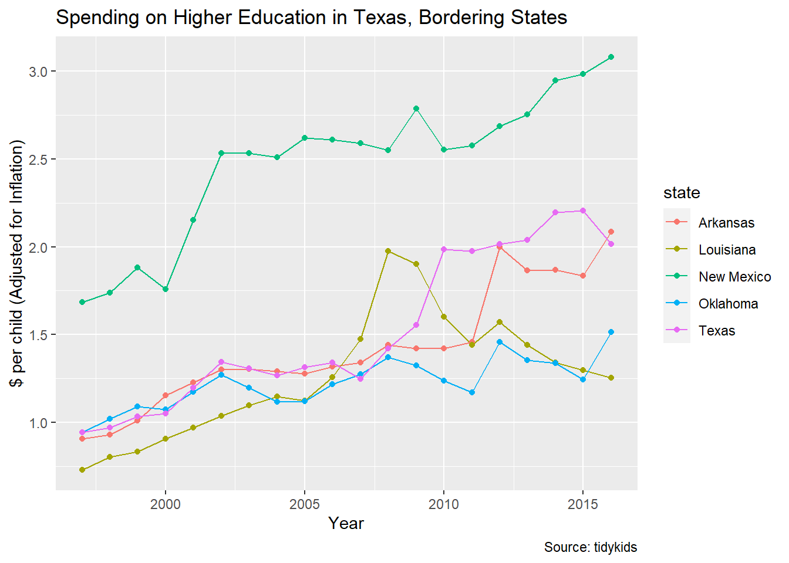
8.9.1 Facet wrap
The facet_wrap() splits your chart based on a single variable. You define which variable to split upon with ~ followed by the variable name.
- Add a new chunk and create the facet wrap shown here.
five_plot +
facet_wrap(~ state) +
theme(legend.position = "none") # removes the legend. Try it without it!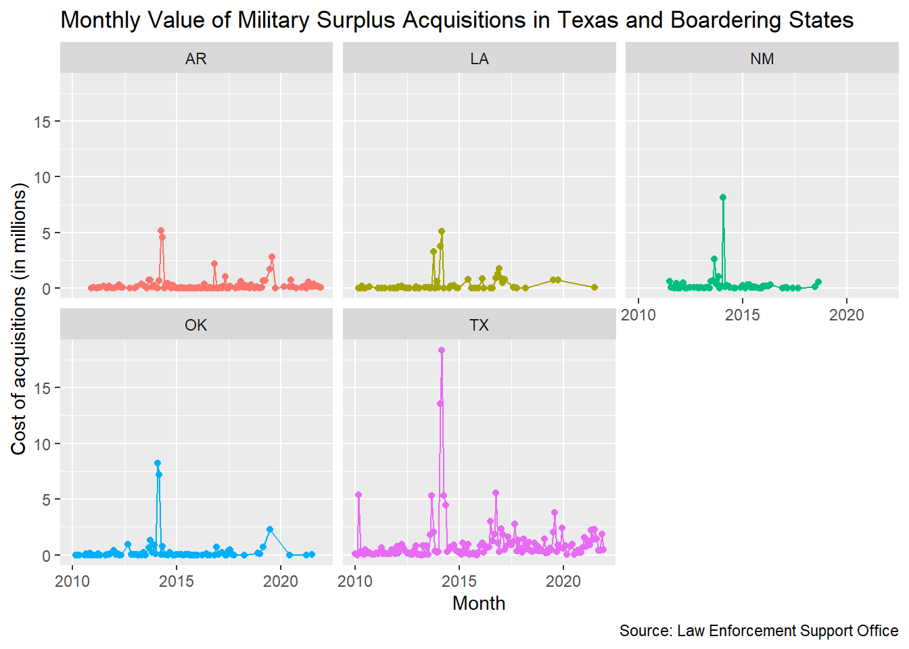
A couple of notes about the above code:
- Note the comment in the code above where we used the
theme()function to remove the legend. - You can specify the number of rows or columns of the grouping by adjusting the facet_wrap() function:
facet_wrap(~ state, nrow = 2)orfacet_wrap(~ state, ncol = 2). Try them!
8.9.2 Facet grids
A facet_grid() allows you to plot on a combination of variables. We don’t really have two numbers to compare in our higher education data so we’ll show this with the mpg data we’ve used before.
- Start a new section noting you’ll try facet grid.
- Add the chunk below and run it.
Explanations follow the chart.
ggplot(mpg) +
geom_point(aes(x = displ, y = hwy)) + # add points to the chart
facet_grid(drv ~ cyl) # splits into charts by drive train and cylinder
This chart is kinda hard to read, but let’s try:
- Inside the mini charts, the best gas mileage is toward the top (from
hwy) and the smaller engines are to the left (fromdispl.) - The rows of charts are divided by drive train
drv: four-wheel drive, front-wheel drive and rear-wheel drive. - The columns of charts are divided by cylinders: like a 4-cylinder car vs 8-cylinder car.
This chart tells us that 4-cylinder, front-wheel drive cars with smaller engines get the best gas mileage. The blank charts mean that combination of values didn’t exist in the data.
8.10 On your own: Facet wrap
- Create a section about doing a facet wrap on your own.
- Take the “On your own” plot that you made earlier (The school spending for Gulf states) and apply a
facet_wrap()here. You were instructed to save the plot into an R object, so you should be able to use that. - Remove the legend since each mini chart is labeled.
8.11 Saving plots
To save plots as images, you can right-click plots that you make in RNotebooks. Or, you can use the export button in the Plot pane. Or (and this is a preferred strategy), you can save them using ggsave(). (Learn more here).
- Use your Files pane to create a new folder called “images” so we can save our chart there.
- Start a section on saving plots and add the following chunk.
ggsave("images/txplot.png", plot = tx_plot)## Saving 7 x 5 in imageUsing ggsave creates a higher-res image than other methods. It needs"
- The path and name of the image, in quotes
- the
plot =variable to say which plot you are saving. (Your plot must already be saved into an R object for this method to work.)
8.12 Interactive plots
Want to make your plot interactive? You can use plotly’s ggplotly() function to transform your graph into an interactive chart.
To use plotly, you’ll want to install the plotly package, add the library, and then use the ggplotly() function:
- In your R Console, run
install.packages("plotly"). (You only have to do this once on your computer.) - Add a new section to note you are creating an interactive chart.
- Add the code below and run it. Then play with the chart!
library(plotly)##
## Attaching package: 'plotly'## The following object is masked from 'package:ggplot2':
##
## last_plot## The following object is masked from 'package:stats':
##
## filter## The following object is masked from 'package:graphics':
##
## layouttx_plot %>%
ggplotly()Now you have tool tips on your points when you hover over them.
The ggplotly() function is not perfect. Alternatively, you can use plotly’s own syntax to build some quite interesting charts, but it’s a whole new syntax to master.
8.13 What we learned
There is so much more to ggplot2 than what we’ve shown here, but these are the basics that should get you through the class. At the top of this chapter are a list of other resources to learn more.